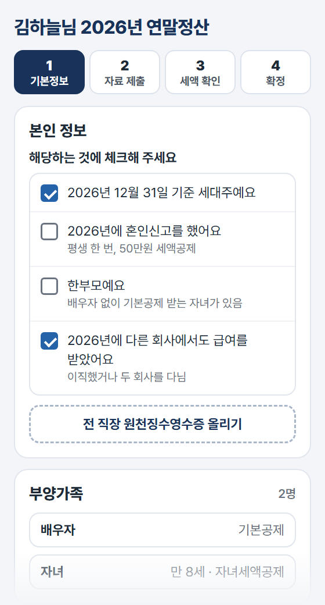
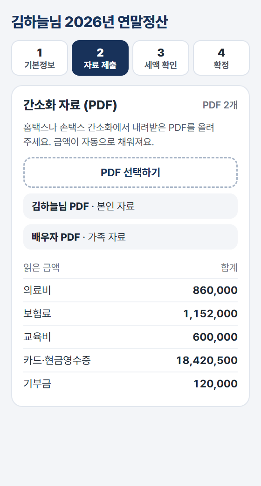
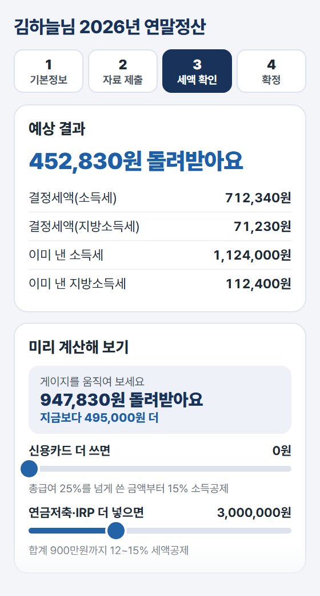
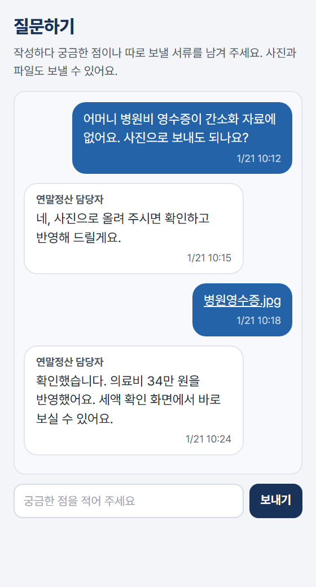

연말정산, 인사팀은 직원 연락처만 넘겨주세요
직원마다 전용 링크를 알림톡이나 메일로 보내 자료를 받고, 상담부터 지급명세서 제출까지 저희가 직접 진행합니다. 서류를 모으고 직원 질문에 답하는 일이 인사팀에서 사라집니다.
한진식 세무사 작성 · 2026년 11월 기준 검토
- 인사팀이 할 일은 연락처뿐서류 취합, 빠진 자료 독촉, 직원 질문 응대를 저희가 합니다. 인사팀은 직원 연락처만 넘겨주시면 됩니다.
- 환급액을 바로 확인직원이 간소화 PDF를 올리면 공제 금액이 자동으로 채워지고, 돌려받을 세금이 그 자리에서 나옵니다.
- 달라지면 얼마나 바뀌는지 미리 계산급여, 카드 사용액, 연금저축 납입액이 달라지면 환급액이 얼마나 바뀌는지 직원이 직접 계산해 볼 수 있습니다.
- 전담 직원이 바로 답변연말정산 전담 직원을 두고 메신저로 빠르게 답합니다. 사진과 파일도 주고받을 수 있습니다.
직원 화면은 이렇게 생겼습니다
직원은 휴대폰에서 네 단계로 끝냅니다. 실제 화면을 바탕으로 다시 그린 예시이며, 이름과 금액은 가상입니다.




진행 절차
회사, 직원, 저희가 각자 할 일입니다. 직원은 휴대폰 하나로 끝내고, 지급명세서 제출 기한인 3월 10일까지 저희가 마무리합니다.
- 직원 연락처와 급여 자료
직원 이름과 휴대폰 번호(또는 메일 주소), 올해 급여대장을 보내 주세요. 저희가 기장하는 회사는 급여 자료가 이미 있어 연락처만 확인하면 됩니다.
- 홈택스 수임동의
저희가 요청 메시지를 보내 드리면 홈택스에서 동의만 해 주시면 됩니다. 이미 저희와 거래 중인 회사는 생략합니다.
- 결과를 2월 급여에 반영2월 급여 전
직원별로 돌려줄 세금과 더 걷을 세금을 정리해 보내 드립니다. 2월 급여에 그대로 반영해 주시면 됩니다.
- 전용 링크 받기1월 중순
국세청 간소화 자료가 열리면 알림톡이나 메일로 직원마다 전용 링크를 보냅니다. 회원가입이나 앱 설치는 필요 없습니다.
- 질문에 답하기
부양가족, 세대주, 주택자금, 월세처럼 간소화 자료로 알 수 없는 것만 묻고, 해당하는 서류만 올리게 합니다.
- 간소화 PDF 올리기
홈택스 간소화 PDF를 올리면 의료비, 카드 사용액 같은 공제 금액이 가족별로 자동으로 채워집니다.
- 예상 세액 확인과 확정
돌려받을 세금과 계산 근거를 바로 보고 확정합니다. 궁금한 점은 어느 단계에서든 메신저로 물어보면 전담 직원이 답합니다.
- 검토와 마감
확정된 자료를 담당자가 검토합니다. 빠진 공제나 요건이 맞지 않는 공제가 보이면 직원에게 직접 확인한 뒤 마감합니다.
- 지급명세서 제출3월 10일까지
근로소득 지급명세서를 홈택스에 제출하고, 직원별 근로소득 원천징수영수증을 회사에 보내 드립니다.
직원 자료는 이렇게 다룹니다
의료비, 가족 정보처럼 회사에 보이고 싶지 않은 자료가 많습니다. 그래서 인사팀을 거치지 않게 만들었습니다.
- 직원이 올린 간소화 PDF, 영수증, 가족 정보는 회사(인사팀)에 보이지 않고 저희 담당자만 봅니다. 회사는 급여 반영과 신고에 필요한 결과만 받습니다.
- 링크는 직원마다 따로 만들어 다른 직원의 자료는 볼 수 없고, 지급명세서 제출 기한(3월 10일)이 지나면 닫힙니다.
- 직원이 개인정보 수집·이용에 동의한 뒤에만 자료를 저장합니다.
- 올린 자료는 신고한 해 6월 30일이 지나면 자동으로 지웁니다.
기장까지 맡기시면 더 간단합니다
연말정산은 한 해 급여 신고를 마무리하는 일입니다. 매달 급여 신고를 함께 맡기시면 이어지는 일이 줄어듭니다.
- 급여 자료를 따로 보내지 않아도 됩니다. 매달 급여대장이 저희에게 있어 직원 연락처만 확인하면 바로 시작합니다.
- 매달 급여, 4대보험, 원천세 신고가 한곳에서 이어지고, 연말정산 결과도 2월분 원천세 신고에 그대로 반영됩니다.
- 세무리포트와 신고 전 사전알림으로 낼 세금을 미리 알려 드립니다. 한택스 기장 서비스 보기
자주 묻는 질문
기장을 맡기지 않은 회사도 연말정산만 맡길 수 있나요?
네. 직원 연락처와 올해 급여대장을 보내 주시고 홈택스 수임동의를 해 주시면 진행합니다. 매달 원천세 신고를 어떻게 하고 계신지에 따라 2월분 신고에 연말정산 결과를 넣는 방법도 함께 안내해 드립니다.
회사가 직원의 연말정산 공제 자료를 볼 수 있나요?
아니요. 직원이 올린 간소화 PDF, 영수증, 가족 정보는 저희 담당자만 봅니다. 회사는 급여에 반영할 환급액과 추가로 낼 세금, 근로소득 원천징수영수증처럼 신고 결과만 받습니다.
연말정산을 위해 직원은 무엇을 준비하면 되나요?
홈택스나 손택스의 연말정산 간소화 서비스에서 내려받은 PDF 파일이면 됩니다. 부양가족 자료까지 받으려면 가족이 미리 자료 제공에 동의해야 합니다. 월세처럼 간소화 자료에 없는 공제는 링크에서 질문에 답하면 필요한 서류만 올리도록 안내합니다.
올해 중간에 입사한 직원의 연말정산은 어떻게 하나요?
전 직장에서 받은 근로소득 원천징수영수증을 합쳐서 정산합니다. 링크에서 전 직장이 있다고 답하면 영수증을 올리는 칸이 열립니다.
연말정산 중에 직원이 질문하면 누가 답하나요?
연말정산 전담 직원이 링크 안의 메신저로 답합니다. 사진이나 파일도 주고받을 수 있어 인사팀으로 질문이 넘어가지 않습니다.
연말정산 대행 비용은 어떻게 되나요?
직원 수와 지금 급여·원천세를 처리하는 방식에 따라 견적을 드립니다.